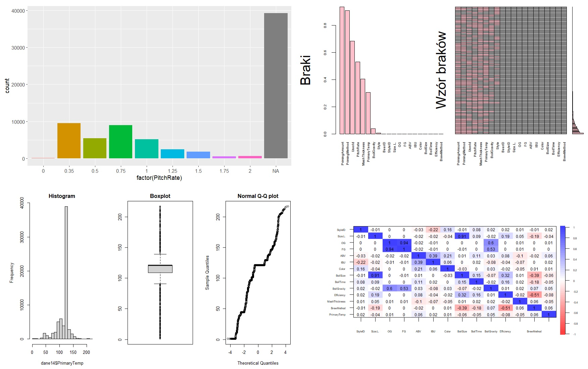
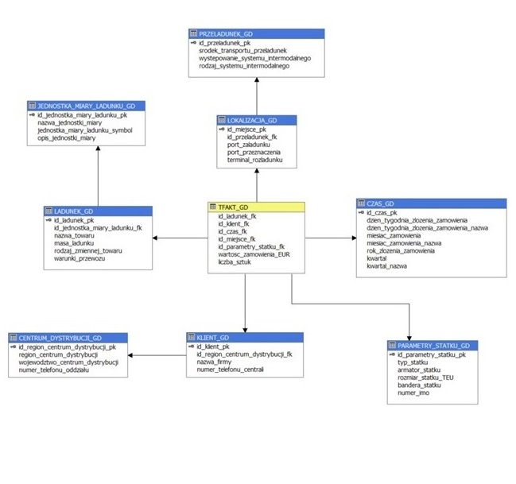
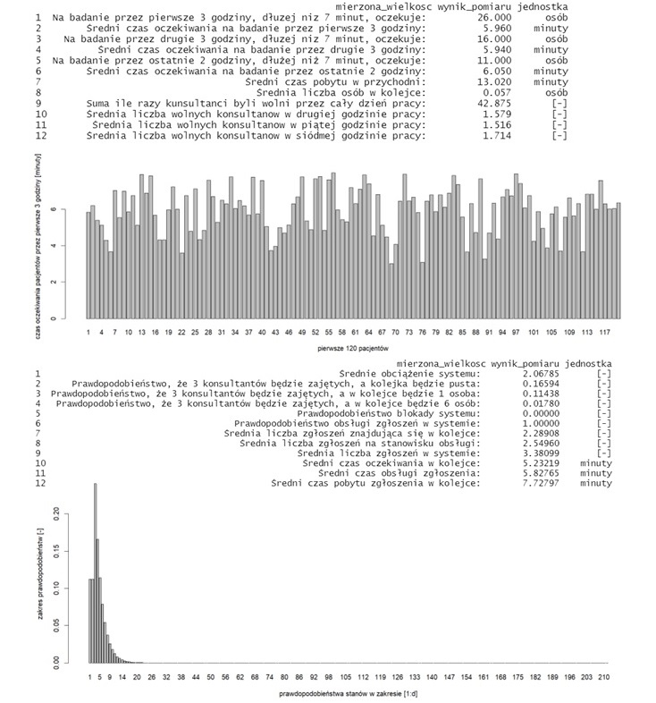
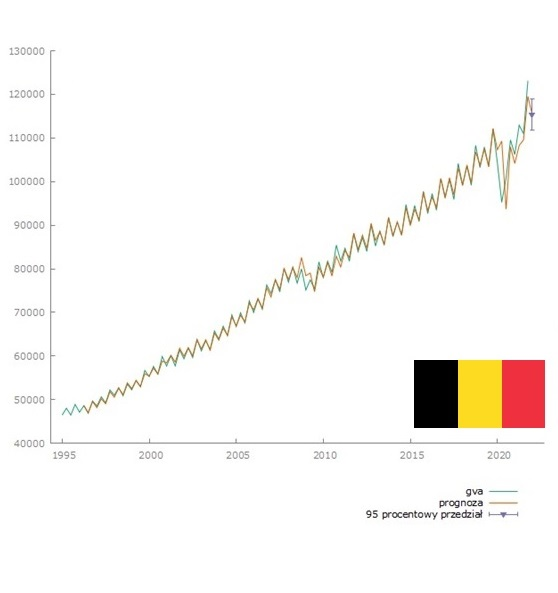
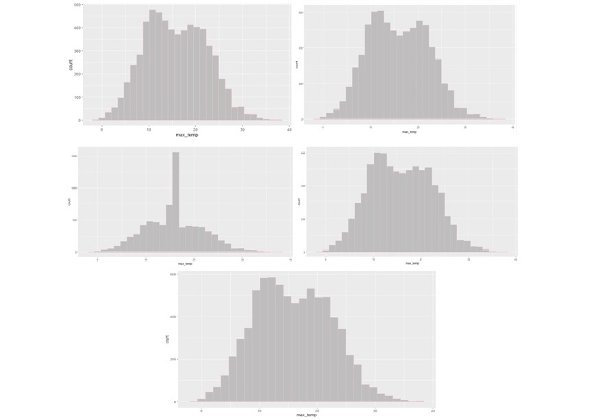

Replacing variables with actual deficiencies, assigning a variable to an appropriate
measurement scale, descriptive statistics of variables, variable visualization.
Detection of data gaps, visualization of gaps and pattern of data gaps, imputation of data gaps.
Extreme value analysis - analysis of histograms, boxplots, statistical tests.
Selection of variables for the study - analysis of correlation and variance.
Selection of units for testing - possible draw (simple, layered, etc.).

Retrieving, sorting, filtering data, text editing functions, aggregates, date and time functions.
Various data visualizations and dashboards.
The project includes initial data analysis, comparison of Kaplan - Meier and Nelson - Aelen estimators, presentation of
time distributions and cumulative hazard functions for selected variables, and construction of a semi-parametric Cox proportional hazard model.
Simple data visualizations.
Simple, multiple regression models, generalized linear models, logit and probit models.

Preparation of a data repository - data warehouse using open data.

Creation of functions, vectors, variables, loops, matrices, dataframe, bar graphs, histograms.

Series visualization, descriptive statistics, unit root tests, HEGY test, autocorrelation test, SARIMA model selection, model forecast and interpretation.

Initial analysis, linear ordering, PCA principal component analysis and cluster analysis.
Initial, cluster, factor and correspondence analysis.

Imputation of missing data using the following methods: k nearest neighbors (with Gower's distance), regression, random forest, hot-deck.